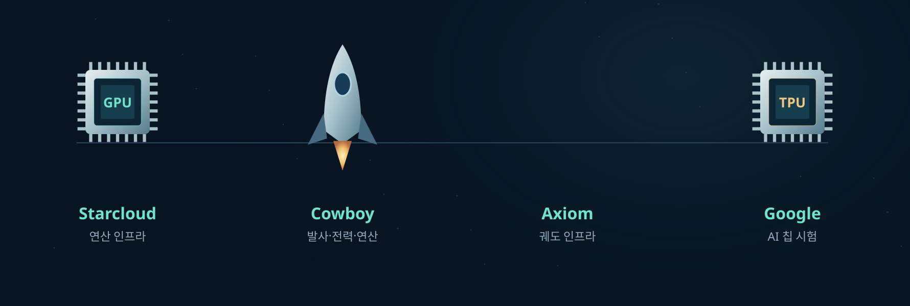
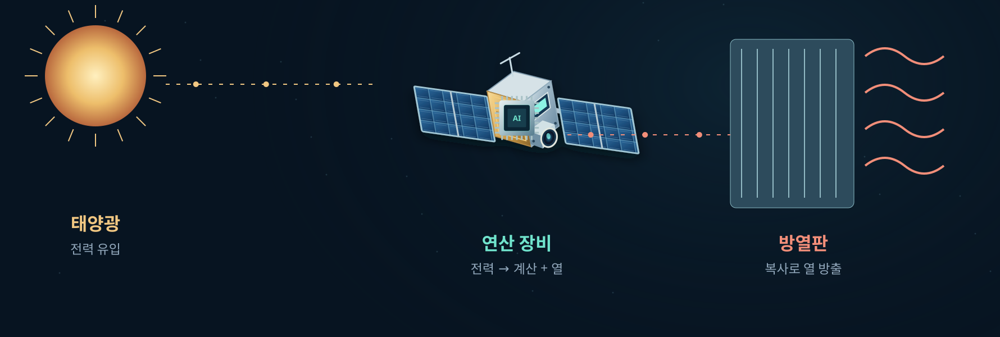
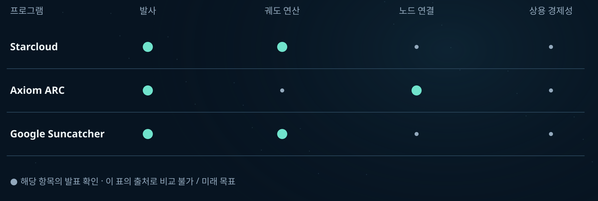

SPECIAL REPORT 2026 산업 지도 · 1부
우주 데이터센터,
누가 앞서가고 있나
돈의 크기와 실증의 깊이를 나눠 읽다.
기업·국가·투자·기술을 연결하는 산업 지도.
수억 달러의 투자 유치와 대형 위성 계획이 이어지고 있습니다. 하지만 자금을 많이 모은 기업과 우주에서 계산·통신을 실제로 해낸 기업은 같은 순서로 줄을 서지 않습니다. 우주 데이터센터 산업을 이해하려면 어떤 시장을 겨냥하는지, 무엇을 실증했는지, 돈의 성격이 무엇인지를 함께 봐야 합니다.
이 특집은 11월 7일까지의 공개 자료를 연결한 중간 정리입니다. 2026년 최종 결산은 연말에 별도로 다룹니다.
CHAPTER 01
한 이름 아래 모인 세 가지 시장
첫째는 위성이 얻은 데이터를 그 자리에서 분석하는 엣지 컴퓨팅입니다. 둘째는 여러 위성의 연산과 통신을 연결하는 분산 네트워크입니다. 셋째는 지상의 대형 데이터센터처럼 거대한 AI 작업을 처리하려는 대규모 궤도 연산 구상입니다. 이 세 층을 섞으면 실증의 의미도, 투자금의 비교도 흐려집니다.
우주에서 컴퓨터를 운영하는 일 자체는 새로운 이야기가 아닙니다. NASA가 소개한 HPE Spaceborne Computer의 경험처럼 이미 축적된 실증이 있습니다. 지금의 질문은 개별 장비를 넘어 전력·통신·운영을 갖춘 서비스를 만들 수 있느냐입니다.
원문 근거 NASA Spinoff · NVIDIA Newsroom · Axiom Space
CHAPTER 02
플레이어마다 출발점이 다르다


Starcloud는 2025년 11월 첫 위성을 발사한 뒤 궤도 AI 학습·추론을 수행했다고 발표했습니다. Axiom과 캐나다 Kepler는 궤도 노드 2개와 노드 사이·지상 간 통신을 확인했다고 밝혔습니다. 다만 양자내성 암호로 보호한 작업 이동은 별도의 지상 실증입니다.
Google Suncatcher는 10월 30일 궤도 TPU의 첫 AI 응답을 발표했습니다. 이후 열·방사선 시험과 2027년 두 위성을 연결하는 실험을 목표로 합니다. 첫 응답이 대규모 상용 서비스의 완성을 뜻하지는 않습니다.
원문 근거 Starcloud · Business Wire · Axiom Space · Google Research
국가는 순위보다 역할로 읽는다
미국
연산 개발사, 대형 AI 기업, 발사·우주 인프라 기업이 서로 다른 출발점에서 참여합니다.
캐나다
Kepler의 광통신망과 미국 Axiom의 연산 노드가 연결됩니다.
유럽
ASCEND의 대형 인프라 타당성 연구와 Φsat-2의 위성 내 AI 실증은 서로 다른 축입니다.
중국
베이징 당국은 40여 기의 위성 연산 자원과 지상 자원을 함께 관리하는 플랫폼을 발표했습니다. 신규 발사 40기를 뜻하지 않습니다.
원문 근거 Cowboy Space · Thales Alenia Space · ESA · 北京市科学技术委员会 · 정부 발표
SpaceX와 Blue Origin의 대형 신청 계획도 별도로 봐야 합니다. 신청서의 위성 수는 실제 발사·운영 실적이 아닙니다. 국가별 대표 사례를 모은 것이며, 동일 조건의 처리 성능이나 국가 종합 순위를 뜻하지 않습니다. SpaceX FCC 공고 · Blue Origin FCC 공고
CHAPTER 03
투자금, 무엇을 더하고 무엇을 뺐나
직접 궤도 컴퓨팅을 개발하는 선정 3개사의 2026년 발표 지분·SAFE 조달액을 비교했습니다. 공개된 라운드의 합계이며 실제 계좌 입금을 독립적으로 확인했다는 의미는 아닙니다. 기업가치와 창업 이후 누적액은 더하지 않았습니다.
선정 3개사 · 단위 USD · M = 백만 달러
3/31 Series A $170M + 8/21 확장 라운드 $250M
5/11 Series B $275M
2/24 Seed $10M + 6/23 SAFE $7M
이 세 사례의 금액 순서입니다. 세계 전체 투자 순위·시장 총액·기술력 순위가 아닙니다. 비공개 조달액은 0으로 간주하지 않았습니다.
| 기업 | 포함한 발표액 | 비교 기준 · 원문 |
|---|---|---|
| Starcloud | $420M 3/31 Series A $170M + 8/21 확장 라운드 $250M | 창업 이후 누적 $450M과 구분. 기업가치는 합산하지 않습니다. |
| Cowboy Space | $275M 5/11 Series B $275M | 구 Aetherflux와 동일 기업입니다. 이름이 바뀌었다고 두 번 세지 않습니다. |
| Sophia Space | $17M 2/24 Seed $10M + 6/23 SAFE $7M | 창업 이후 누적 $22M과 구분합니다. SAFE는 향후 지분 전환을 전제로 한 투자 계약입니다. |
큰 금액이라도 같은 표에 넣을 수 없는 이유
위성 10기를 위한 자산 금융 구조입니다. 원문은 구속력 없는 지원 서한에 기초한다고 밝힙니다. 금융사가 위성을 사서 이용자에게 빌려주는 구상으로, 확정된 지분 투자 3억 달러로 합산하지 않았습니다.
원문 근거 Sophia Space
위성 통신 장비와 네트워크를 아우르는 회사의 금융 조달 발표입니다. 이를 전부 우주 데이터센터 전용 투자로 볼 수 없어 비교에서 제외했습니다. 원문의 지분·대출 구성을 임의로 재계산하지 않았습니다.
원문 근거 CesiumAstro
CHAPTER 04
칩만으로 데이터센터가 되지는 않는다
활동이 이어지는 분야는 연산 장비, 광통신, 전력·열관리, 제작·발사, 운영 소프트웨어입니다. Cowboy는 여러 기능을 직접 통합하려 하고, Axiom과 Kepler는 서로의 역할을 연결합니다. NVIDIA의 3월 발표에도 Axiom·Kepler·Starcloud·Sophia·당시 Aetherflux가 함께 등장합니다. 다만 이들이 동일한 칩을 모두 우주에서 운영한다는 뜻은 아닙니다.
원문 근거 NVIDIA Newsroom · Cowboy Space · Axiom Space


우주가 차갑다고 장비의 열이 저절로 빠지지는 않습니다. 진공에서는 공기를 통한 대류 냉각을 쓸 수 없으므로, 내부 열을 외부로 전달하고 복사로 방출해야 합니다. 전력·연산 성능·질량·방열을 함께 설계하는 능력이 필요합니다.
CHAPTER 05
진척은 발표의 크기보다 실증 단계로
Starcloud의 3월 투자와 8월 추가 조달·제조 확대, Axiom의 10월 통신 진척, Google의 같은 달 궤도 AI 응답은 서로 다른 이정표입니다. 구상에서 하드웨어와 운영으로 이동하는 사례라는 점은 의미가 있습니다. 그러나 동일한 시험 조건에서 측정한 성능 증가율은 아닙니다.


원문 근거 Starcloud · Business Wire · Axiom Space · Google Research
앞으로 확인할 세 가지
이는 공개 사례를 종합한 편집적 판단입니다. 우주에서 생긴 데이터를 가까이서 처리하는 수요는 성장 동력이 될 수 있지만, 지상의 대형 연산까지 옮기는 사업의 수익성을 이미 입증했다고 볼 자료는 충분하지 않습니다.
원문 근거 Axiom Space · NASA · Small spacecraft thermal control · Google Research
SOURCES & METHOD
원문 근거와 비교 범위
기업·기관의 원문 발표를 우선했습니다. 기업이 발표한 시험 결과는 해당 발표의 범위로 서술했으며, 성능을 독립적으로 재현했다는 뜻은 아닙니다. 과거 자료는 산업 배경을 설명하기 위해 구분해 사용했습니다.
전체 원문 17건 펼치기
2026년 3월 Series A 1억 7,000만 달러. 기업가치 11억 달러와 조달액을 구분합니다.
8월 추가 2억 5,000만 달러, 누적 4억 5,000만 달러 및 궤도 실증에 대한 회사 발표.
5월 Series B 2억 7,500만 달러, 사명 변경 및 발사·전력·연산 통합 개발 구상.
궤도 노드 2개와 통신 진척. 양자내성 암호화 작업 이동은 별도의 지상 시험.
10월 궤도 TPU의 첫 AI 응답과 후속 열·방사선 시험, 2027년 연결 실험 목표.
우주 컴퓨팅 플랫폼과 협업 기업. 개발 협력과 동일 장비의 궤도 운용은 구분합니다.
2026년 최초 신청에 관한 FCC 공고. 신청 범위를 실제 발사·운영 수로 해석하지 않습니다.
Project Sunrise의 최초 신청에 관한 FCC 공고. 현재 운영 실적을 나타내지 않습니다.
2024년 발표된 유럽 대규모 우주 데이터센터 타당성 연구. 산업 배경 자료입니다.
Φsat-2의 임무·발사·위성 내 AI 개요. 대규모 데이터센터와 다른 실증 범주입니다.
40여 기 위성 연산 자원과 지상 자원의 통합 관리에 관한 베이징 당국 발표.
2026년 2월 1,000만 달러 시드 투자 마감 발표.
6월 700만 달러 SAFE와 Apex 협업. 누적 조달 2,200만 달러는 연간 신규 투자와 구분합니다.
3억 달러 자산 금융 구조. 구속력 없는 지원 서한을 근거로 하며 지분 조달액에서 제외합니다.
7억 3,000만 달러 전사 금융 조달 발표. 우주 데이터센터 전용 투자로 전액 합산하지 않습니다.
HPE Spaceborne Computer의 우주 운영 경험. 개별 컴퓨터 실증의 역사적 배경입니다.
진공에서의 전도·복사와 소형 우주선 열관리 원리.